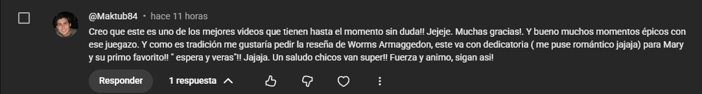

NOS LO PIDIERON

Y aqui esta.
RESEÑA RETROTARRISTICA
WORMS ARMAGEDDON
El juego de gusanos con bazookas que Team17 siguio parchando 21 años despues

WORMS ARMAGEDDON
CONSOLAPC (Windows) · PlayStation · Dreamcast · Nintendo 64 · Game Boy Color
AÑO1999 (PC/PS1/Dreamcast) / 2000 (N64/GBC)
DESARROLLADORTeam17 (dir. Martyn Brown)
GENEROEstrategia por Turnos (Artilleria)
EN LA COLECCION
CONTEXTO DE EPOCA
Llegamos a 1999 (PC/PS1/Dreamcast) / 2000 (N64/GBC)
Team17 ya tenia dos Worms anteriores, pero Armageddon (1999) fue la entrega que la comunidad adopto como LA version definitiva -tanto que en 2016 Team17 diseño Worms W.M.D. basandose entero en ella, porque los fans la seguian pidiendo como su favorita.
COMPARATIVA
PC (WINDOWS) · PLAYSTATION · DREAMCAST · NINTENDO 64 · GAME BOY COLOR · 1999 (PC/PS1/Dreamcast) / 2000 (N64/GBC)
TARROVISIONCH 01
NO SIGNAL
Inserta gameplay aqui
VS
TARROVISIONCH 02
NO SIGNAL
Inserta gameplay aqui
JUGABILIDAD HOY
PC (WINDOWS) · PLAYSTATION · DREAMCAST · NINTENDO 64 · GAME BOY COLOR · 1999 (PC/PS1/Dreamcast) / 2000 (N64/GBC) · GAMEPLAY
TARROVISIONCH 03
NO SIGNAL
Inserta gameplay aqui
EL DATOHasta 8 gusanos por equipo, terreno 2D totalmente destructible, y un arsenal que va de la bazooka realista a la oveja explosiva. Cuerda ninja, paracaidas, teletransporte y bungee para moverte por el mapa.
GRAFICOS Y SONIDO HOY
PC (WINDOWS) · PLAYSTATION · DREAMCAST · NINTENDO 64 · GAME BOY COLOR · 1999 (PC/PS1/Dreamcast) / 2000 (N64/GBC) · GAMEPLAY
TARROVISIONCH 04
NO SIGNAL
Inserta gameplay aqui
EL DATOSigue vivo: recibio actualizaciones oficiales hasta 2020 -21 años despues de salir-, mantenidas por dos fans (Deadcode y CyberShadow) que Team17 dejo seguir el proyecto. WormNET conecta partidas online desde la epoca del dial-up.
VEREDICTO RETROTARROS
IMPRESCINDIBLE
No hay que jugarlo pensando que es 'solo nostalgia' -es de los pocos juegos de 1999 que siguio recibiendo parches oficiales hasta el año 2020, mantenido por fans que la propia empresa dejo seguir el proyecto. Vale la pena porque, mas de veinte años despues, sigue siendo el Worms que todos los Worms posteriores -incluida la propia W.M.D. de 2016- tratan de igualar.
RETROTARROS
SUSCRIBETE
Activa la campana para no perderte la proxima reseña. ¿Que juego quieres que revisemos? Comenta abajo.